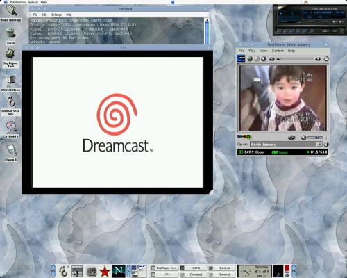

In
this article I want to show you a few things you can do with a $50 TV card under
Linux. This article expects you to know how to compile the kernel, and how to
install general application on Linux. I will not get into too much detail, but
for each section there are plenty of documentation available on the web for you
to study and learn.
This
last week I had a blast setting up a Pinnacle Studio PCTV on my Linux box. You
can get this TV Card for about $50 on most online computer stores.
First,
let me give you my settings:
1
GHz Athlon
256 MB of RAM
60 GB HD
VIA 97 Sound Card
Nvidia TNT2
Running Red Hat 7
Kernel 2.4.1
Xfree86 4.0.2
Pinnacle Studio PCTV
Here
is what you need:
1.
Sound working under Linux.
This can either be accomplished by running /usr/sbin/setup (under Red Hat
systems) or by manually loading the sound drivers with /sbin/insmod.
I also would suggest that you take a look at http://www.opensound.com
if your sound still doesn't work under Linux, and you have tried both previous
procedures.
2.Kernel
configured to support bttv driver (http://www.strusel007.de/linux/bttv/)
With the original kernel 2.2.x that comes with Red Hat, your bttv drivers
should already be in place, compiled and ready to go.
If you need to (re)compile 2.4.0, you need the following options
activated.:
• Under Character Devices-> I2C support, turn on I2C support, and I2C bit-banging interfaces
•
Under
Multimedia Devices, turn on Video For Linux, and under Video For Linux, set
BT848 Video For Linux as a module.
Feel free to add anything else that you need, but for help, read the
kernel documentation.
After the kernel has been successfully compiled, and its modules, reboot
your machine, and run /sbin/insmod bttv. If no error pops up, you should be all
set.
So, now we need an application to interface with the TV drivers.
3.
xawtv
Download this app at: http://www.strusel007.de/linux/xawtv/index.html
Nothing
too exciting here, download it, untar it, then:
• ./configure
•
./make
•
./make install
Note: The only error I have seen this application give me, is that it
will not work if the there is something wrong with your: /etc/X11/app-defaults/
directory or path.
3.1.
Running xawtv:
To run xawtv, on your Xterminal just run xawtv, it will pop a screen with
good old fuzzy TV noise will show up (assuming that you have gotten all the
previous steps right, and your TV card is installed :-D).
You can right click on the TV screen to get a menu where you can do all
sorts of things to the application. To know more about how to configure this
app, just read the documentation included with it (It is pretty good).
With xawtv, you should be able to plug in your cable, regular antennas,
and watch TV on Linux, or even a VCR/DVD and watch your favorite movie.
4.
Running Sega DreamCast on your Linux box.
If you have gotten all the last 3 steps done right, you now, can bring in
your Sega DreamCast (or whatever other video game console you have), and plug it
in to the back of your TV card, play video games via xawtv.
My Settings:
To get mine running I basically, plug the Video output of my Sega
DreamCast into my Composite Plug on
the back of my TV card, and I went to Radio Shack and paid $2 for a adaptor that
allows to plug my Audio (L/R) output of my DreamCast directly into the Line-In
plug of my sound card. The reason I did it that way? It saved me $20, this way I
don't have to buy Sega's RF Adaptor. You are also welcome to just plug in a VCR
into your TV card, and your DreamCast into the VCR.
5.
Creating Real Video on Linux
Now, this was the most exciting part of them all for me, and probably the
one that took me the longest to get it going. First of all download the Real
Producer Basic from: http://proforma.real.com/rn/tools/producer/index.html
(Note: Real Networks is always changing their products' URL, if this URL stops
working, just go to http://www.real.com
and search for the Real Producer Basic).
After going through the installation process, go to the
directory where you just installed real producer (in most cases: /usr/local/realproducer-8.5),
you can run something like this:
[root]# realproducer -o /tmp/testing.rm -t 7 -a 3 -v 0 -f 0 -b
"Testing Video" -h "Anderson Silva" -c "Personal"
-vc RV300 -l 2:1,8:1
On the example above, I am capturing video straight from my TV card, and
encoding it to Real Player 8 and saving it under /tmp directory as testing.rm.
Command Line Options:
-t Target Audience (e.g. 7 is for Cable bandwidth)
-a Audio
Format (e.g. 3 is for Stereo Sound)
-v Video
Quality (e.g. 0 is for Normal Video)
-f File
Type (e.g. 0 is for Single Rate Video)
-b Video
Title
-h Author
Information
-c Copyright
Information
-vc Video
Encoding (e.g. VC300 for Real Player 8, VC2000 for Real Player 7)
-l audio,
and video devices (e.g. 2:1 grab audio from Line-In output, 8:1 grab video
from Composite output on TV Card).
This is just a fraction of the command line options for the realproducer. You can read more about them running ./realproducer –help or by reading the documentation that comes with it (usually stored at /usr/local/realproducer-8.5/help/producer.htm)

Other
TV Cards:
In
theory, the following cards are also suppose to work: STB
TV PCI, Diamond
DTV2000 (*), Videologic
Captivator PCI, AVerMedia
TV-Phone (*), Osprey-100,
IDS Imaging FALCON.
* Links removed because they went dead. Current URLs are unknown. -Ed.